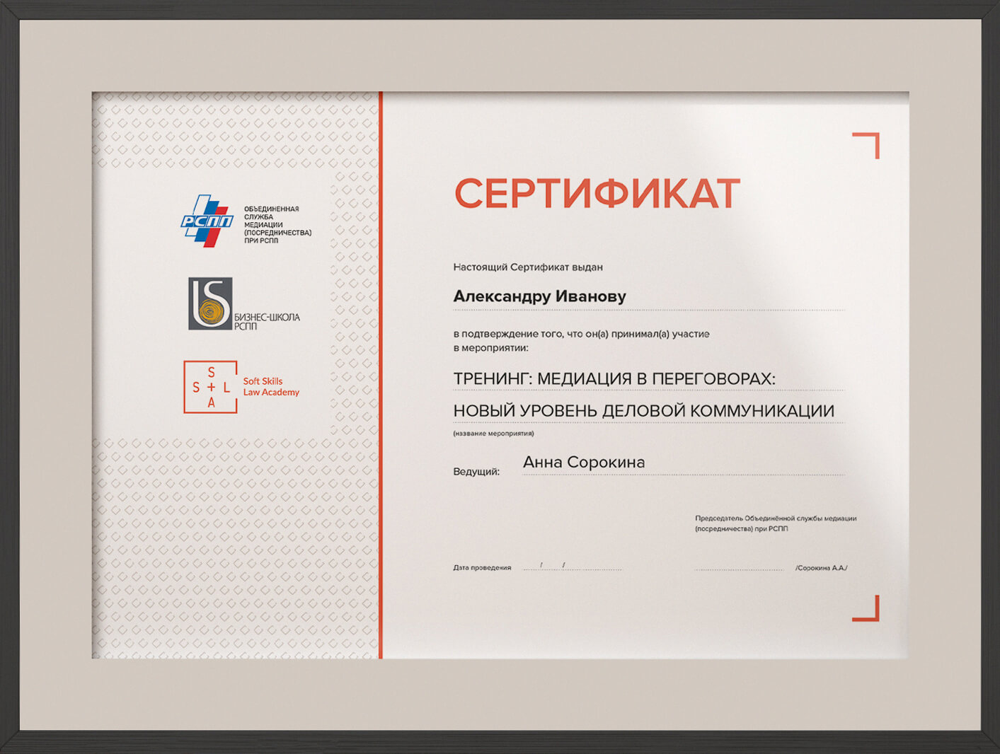

Этот тренинг будет очень полезен для предпринимателей любой сферы бизнеса, юристам и адвокатам, а также всем, кто заинтересован повысить уровень эффективности своей коммуникации как в профессиональной, так и в личной жизни.
1Первое впечатление в переговорах и осознанное им управление
2Медиативный и коучинговый подходы в переговорах
3Алгоритмы подготовки к переговорам: GROW и Negotek Prep
4Анализ позиции в переговорах и её усиление
5Стратегия и тактика переговоров: анализ ZOPA, BATNA, WATNA
6HIT: типология переговорных вопросов и формирование пакетных предложений
7Правила составления повестки переговоров
8Коммуникационное поле переговоров: виды стейкхолдеров и их влияние на ход и результат переговоров
9CASE-STUDY: отработка полученных знаний в игровом кейсе
1Стили ведения переговоров
2Фасилитация переговорного процесса: повестка, тайминг, онлайн-протоколирование
3Исследование интересов и потребностей сторон по модели SCORE
4EQ в переговорах: управление своими эмоциями и осознанная смена эмоциональных состояний
5Типология переговорщиков по модели DISC и базовым эмоциональным состояниям, типам мышления, ценностям и локусу контроля
6Управление взаимоотношениями: калибровка, эмпатия, сонастройка
7Командные переговоры: роли, функции, правила взаимодействия
8CASE-STUDY: отработка полученных знаний в игровом кейсе
Наш тренинг на 100% является авторским и не имеет аналогов
Программа и игровые кейсы разработаны Анной Сорокиной, Председателем Объединённой службы медиации (посредничества) при РСПП, а также основателем Soft Skills Law Academy.
Тренинг проводится при поддержке Бизнес-Школы РСПП. По результатам прохождения обучения участники тренинга получат сертификат.
Автор и ведущая тренинга
Юрист
Психолог
Коуч
Бизнес-тренер
Медиатор

Председатель Объединённой службы медиации (посредничества) при РСПП
Основатель Soft Skills Law Academy
14-летний стаж работы по юридической специальности, из которых 12 лет в международной юридической компании Noerr
Глава практики внесудебного разрешения споров юридической компании «Гриц и партнёры» в 2020 году, реализация проекта #МыСВамиЗаодно (бесплатной медиативной помощи арендаторам по разрешению конфликтов с арендодателями в период кризиса COVID-19 первой волны, март-май 2020 года)
Автор и координатор программы обучения медиаторов, реализуемой -совместно ФБУ НЦПИ при Минюсте России и Российским Арбитражным Центром при Институте современного арбитража
Преподаватель курса «Практические навыки работы юриста» Юридического института «М-Логос»
С 2014 по 2019 годы ежегодно входила в список лучших юристов России в сфере недвижимости, строительства и регулирования земельных отношений // Best Lawyers 2014-2019 гг.
Коллеги, тренинг по переговорам — это однозначный must для юриста. Аня учит техникам управления конфликтом в переговорах, учит распознавать приёмы манипулирования сознанием, уметь противодействовать им. Тренинг проходит в формате лекций с активным вовлечением слушателей в обсуждения, в качестве "вишенки на торте"- захватывающая деловая игра, в процессе которой происходит абсолютный выход из зоны комфорта. Полезный опыт не только для профессионального, но и для личного роста. Потрясающая Анина энергетика, качественная подача полезной информации, захватывающая деловая игра делают тренинг невероятно продуктивным и интересным! Спасибо Ане и всем участникам!
Анна, спасибо Вам за те знания, что Вы дали, за ту качественную презентацию и подачу материала! Было очень интересно, весело и познавательно. Что очень понравилось, это то, что тренинг проходил не только в теории, но и в практике! И конечно же разбор полётов после практических занятий помогал понять, где какие ошибки были допущены, а где классно сориентировался и даже смог повернуть ход переговоров. Кейс с «шишками» на самом деле надолго остался в памяти и он постоянно будет напоминать мне, что решение проблемы может лежать на поверхности, надо только задавать правильные вопросы и уметь слушать ) Для всех тех, кто будет читать мой отзыв, могу сказать следующее: Хочешь научиться договариваться даже в сложных переговорах? Хочешь поднять свой скилл и чаще выходить из переговоров если не победителем, то точно не проигравшим? Хочешь узнать, каким образом некоторые люди могут пытаться манипулировать тобой и как этому противостоять? Тогда тебе точно нужно посетить тренинг Анны Сорокиной! Я очень рад, что попал на этот тренинг, я многому научился там. Спасибо Анна!
«На курсе по переговорам Анна дает инструменты для эффективных переговоров: начиная от подготовки к переговорам и заканчивая сложными переговорами. Эти инструменты помогут не только в работе с клиентами, коллегами, контрагентами, но и в общении с друзьями и семьей»
«Я прошла полный курс "Юрист на переговорах" весной 2019 года. Полезной информации очень много, при этом она отлично структурирована и легко воспринимается. Кроме того, практические задания в игровой форме помогают отработать полученные знания на практике на месте, так сказать, не отходя от кассы. Для меня самым главным результатом этого тренинга стало понимание сути переговоров, их четкой структуры. И как результат, для меня лично переговоры стали более предсказуемым и контролируемым процессом. Помимо прочего, пройденный курс послужил мощным стимулом для дальнейшего саморазвития, но уже чуточку более осознанного»
Отличный и полезный курс "Юрист на переговорах"! Удачные форма и время проведения. По форме это не скучные лекции, а живое общение, в ходе которого кратко сформулированная и важная информация лучше понимается и усваивается. Время удобно тем, что не отвлекает о рабочего процесса. Да, надо потратить личное время, но количество времени оптимально подобрано, погружение получается интенсивным и эффективным. Новые знания можно использовать сразу же после их получения. И это работает! На курсе рассказывают и о, казалось бы, очевидных моментах вроде подготовки к переговорам, ролях участников, но в таком ракурсе, что информация не пропускается мимо, а сразу приходит понимание ее значимости. А также о сложных для самостоятельного понимания особенностях переговорного процесса: разработка стратегии переговоров, оценка личностей контрагентов, распознавание манипулятивных тактик и умение их нивелировать. Курс очень насыщен практическими занятиями, что также помогает лучше запомнить новую информацию, а по итогам игровых ситуаций проходит их подробный анализ. Анна - отличный коуч и спикер! Умеет держать внимание, просто объяснять сложное и заряжать эмоциями! Искренность и доброжелательность Анны создают отличную атмосферу для обучения и общения. Советую курс всем-всем и не только юристам, потому что он универсален!
«Сходила на тренинг по переговорам Анны Сорокиной в Soft Skills Law Academy весной 2019. Было хорошо и много, что понравилось. Много теории, не все получилось переложить в тренинги, но ключевые моменты были отыграны и весьма качественно. В итоге, тренинг получился сбалансированный. Была маленькая и комфортная группа. Все включены в работу. Ориентировано на юристов и это прекрасно :) И главное - фокус на человеке в переговорах, а не на технологии. Как бы ни были притягательны идеи рационализации переговоров, отработки типовых алгоритмов и «делай раз‑два-три» стратегий, без учета личностных характеристик переговорщиков не обойтись. Тренинг в большей части сфокусирован на психологических особенностях людей, садящихся за стол переговоров. Получилось интересно и нестандартно для юридической аудитории. Вывод. Добротный тренинг, можно брать»
Если для вас недостаточно hard skills и soft skill не пустые или просто модные слова, то вы на верном пути. 3 модуля, от подготовки до распознавания манипуляций — все эти знания пригодятся не только в работе, они нужны в нашей ежедневной жизни. С экранов ТВ, в метро, на работе вы сталкиваетесь и встречаетесь с разными людьми, почти каждый наш диалог — это переговоры и, посетив курс, вы поймете как стать успешным переговорщиком, «отсечете» манипуляции и найдете конструктивное решение. Win-Win, BATNA и WATNA, ZOPA, акулы, пауки и медведи — все и это и многое другое Вам понятным языком преподаст замечательный человек и коуч Анна Сорокина. А бонусом станет нетворкинг с замечательными юристами из разных сфер деятельности.
Мы не гонимся за количеством, только качество! Чтобы сохранить индивидуальный подход, ЧИСЛО МЕСТ НА ТРЕНИНГЕ ОГРАНИЧЕНО.
До 1 апреля 2021 г. вы можете записаться на тренинг «МЕДИАЦИЯ В ПЕРЕГОВОРАХ: НОВЫЙ УРОВЕНЬ ДЕЛОВОЙ КОММУНИКАЦИИ» со скидкой!
МЕСТО ПРОВЕДЕНИЯ
Здание Российского Союза Промышленников и Предпринимателей, Котельническая набережная, д. 17
При оплате до 1 апреля 2021 г. стоимость тренинга
При оплате после 1 апреля 2021 г. стоимость тренинга
Для регистрации на мероприятие оставьте Ваши данные. Наш менеджер свяжется с Вами, подтвердит участие и вышлет реквизиты для оплаты.
Нажимая кнопку «ЗАПИСАТЬСЯ НА ТРЕНИНГ», вы соглашаетесь с условиями «Публичной оферты», «Политикой конфиденциальности» и даете «Согласие на обработку персональных данных»